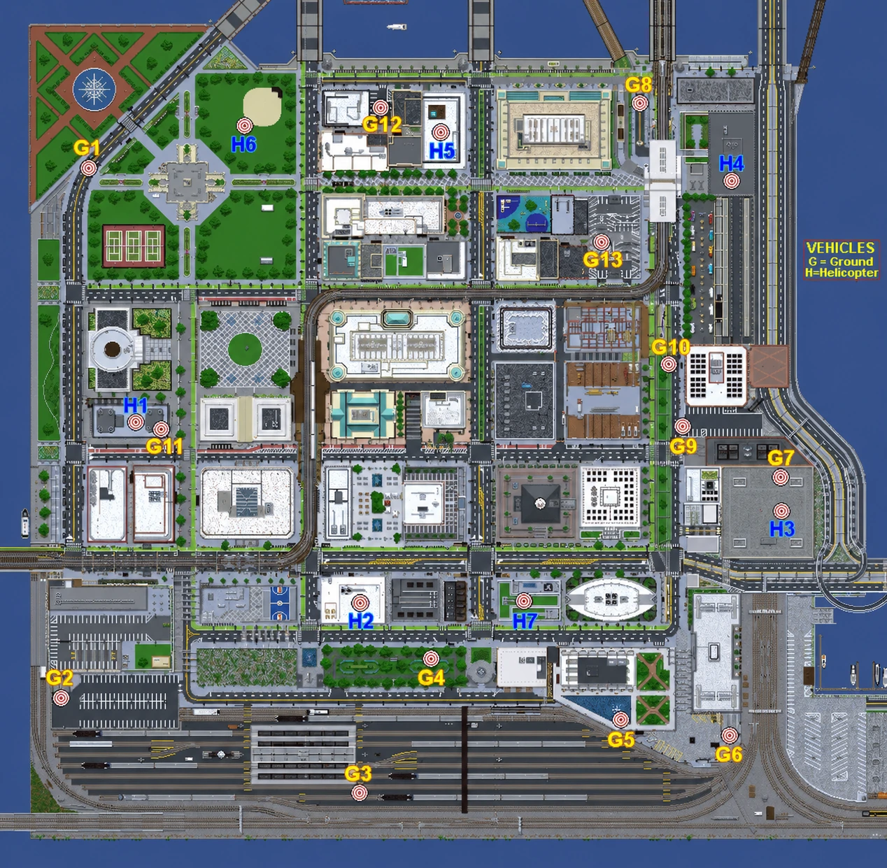

Battle Royale
Main Modes
Drop, loot, survive.
Battle Royale drops players over Shmar with custom guns, upgrades, explosives, and possible vehicles scattered through the map. The zone keeps moving, forcing squads and solo players into fights until one side is left standing. Deathmatch is the faster mode: pick a kit, spawn with your team, and keep trading rounds until the final score decides the winner.
Battle Royale
Queue up, fly over Shmar, drop where you want, loot weapons and upgrades, use explosives or vehicles when you find them, and stay ahead of the moving zone.
BR statsDeathmatch
Vote maps, pick kits, chase team score, and build a profile with map stats, kit stats, top match kills, accuracy, and favorite weapons.
DM statsTracker
Check rankings, player profiles, match history, weapons, maps, headshots, playtime, win rates, and the last completed games from the live server stats.
LeaderboardsPlaytests
Pick the best community match time with transparent availability, preferred dates, mode interest, and a ranked winner.
Open schedulerBattle Royale Intel
Shmar vehicle spawn map.
Use the marked locations when planning a drop or searching for transport. These are possible spawn points, so a vehicle is not guaranteed to appear at every marker in every match.
-
Ground vehicles and tanks13 possible locations, marked G1 through G13.
-
Helicopters7 possible locations, marked H1 through H7.
Spawn chance: Marked locations do not have a 100% vehicle spawn rate.

Community Playtests
Vote the next session into shape.
Planned dates are highlighted as featured sessions, while extra community suggestions live on the calendar. Pick Available, Maybe, Unavailable, or Preferred, then choose whether you would rather test Battle Royale, Deathmatch, or either mode.
Join The Server
Install the pack, join Discord, queue up and play.
Featured Videos
Call of Block clips and updates.
Follow the channel for match highlights, trailers, update previews, and event recaps. A specific featured video can be added here once one is published.
YouTube
TheWrongLuke
Open channel
Getting Started
How to play
Install the matching pack, join an announced server session, then use the in-game Call of Block menu to enter a mode.
- Install the official modpack.Use its CurseForge or Modrinth launcher profile for Minecraft 1.20.1 Forge so every required mod stays on the matching version.
- Check the current session.Join Discord for the server address, whitelist or access instructions, announcements, rules, and scheduled playtest time.
- Open the game menu.Bind
Open Call of Block Menuunder Minecraft Controls, or type/brmenu, then join the Battle Royale or Deathmatch queue.
Drop, loot, survive.
- Choose solo or team play from the Call of Block menu. You can create a team before joining the queue.
- Ride the fly-by over Shmar, choose your drop, then search chests for weapons, attachments, healing, utility, explosives, and possible vehicles.
- Keep moving with the closing zone and survive until one player or team remains.
- Night Vision Goggles are equipped at round start and begin switched off. Bind
Toggle Night Vision Gogglesin the Call of Block controls to use them.
Vote, kit up, score.
- Join from the menu or with
/joindm, then choose a Red, Blue, or random team preference. Teams are balanced when the round starts. - Vote for an available map while queued. Use the menu,
/vote map <id>, or/vote random. - Choose a kit during the active round. You respawn after dying and return with your selected kit.
- Help your team reach the kill target before the other team or finish ahead when the timer expires.
After the match
Completed rounds are published to the website for leaderboards, profiles, weapons, maps, and match history. To connect those stats to your website account, run /linkminecraft in Discord's #minecraft-verification channel and then /discordlink <code> in Minecraft while the bot and server are online.
Questions
FAQ
Is the server online all the time?
No. The community server is not guaranteed to run 24/7. Check Discord announcements and the Playtests page for planned sessions and confirmed dates.
What do I need to install?
Install the official Call of Block modpack through CurseForge or Modrinth. It runs on Minecraft 1.20.1 Forge. Using the launcher profile is safer than assembling the mods manually.
Can cracked players join?
The server can support cracked accounts during community sessions, but the current whitelist and access instructions still apply. Check Discord before joining, and use the same required modpack.
What is the difference between the two modes?
Battle Royale is a survival match built around dropping, looting, the moving zone, and being the final surviving player or team. Deathmatch is a team mode with map voting, selectable kits, respawns, and a kill target or time limit.
Do I need to log in with Discord?
No login is needed to browse public stats. Discord login is required for your website account, profile customization, missions, playtest voting and notifications, and Feedback & Support tickets.
How do I link Discord, Minecraft, and my stats?
Run /linkminecraft in Discord's #minecraft-verification channel, then use the displayed /discordlink <code> command in Minecraft before it expires. The bot and server must be online while linking. Once saved, your website profile can load the link while the bot is offline.
Why have my stats not updated yet?
Stats are recorded by the server and published after completed matches. Mid-round values do not immediately replace the public profile. Wait for the match and publish process to finish, then reload the page.
How do community playtests work?
Open Playtests, select a date, and submit your status and available time range. Times are displayed in your local timezone. A gray Unconfirmed date is only a possibility; the Upcoming Event appears after an administrator confirms the final date and time.
Who can see my support tickets and evidence?
Your ticket, replies, and directly uploaded screenshot or clip are available to you and authorized staff, not to other players. Do not include passwords, authentication codes, or other secrets.
Why do I sometimes still see old website content?
GitHub Pages and browsers can cache site files for several minutes. First try a normal reload. If a new deployment is still showing an old script or image, use Ctrl+F5 once to bypass the cached copy.
Server Help
Commands and controls
Type /brhelp in-game for the short version. Admins can open the full setup reference on its own page.
Open Call of Block MenuBind this in Minecraft Controls, or use /brmenu./brmenuOpens the main server menu for queues, teams, votes, kits, and mode panels./hubReturns you to hub. If you are spectating Battle Royale, it exits spectator first.
/brmenuJoin or leave the BR queue, pick solo/team, create a team, and check match state./brspectateJoins a running BR match as a spectator when you are not a participant./brspectate leaveLeaves BR spectator mode and returns you to normal hub flow.
/joindmJoins the Deathmatch queue./leavedmLeaves the Deathmatch queue and sends you back to hub./dmteam 1|2|randomSets your preferred DM team before teams are locked./vote map <id>Votes for a map while queued. Use /vote random to vote random./kitOpens the kit picker during an active DM round. Use /kit <id> to select directly.
Requirements
Player commands require being on the server. Voting requires being queued for Deathmatch. Kit changing requires an active Deathmatch round. Admin commands require permission level 2.